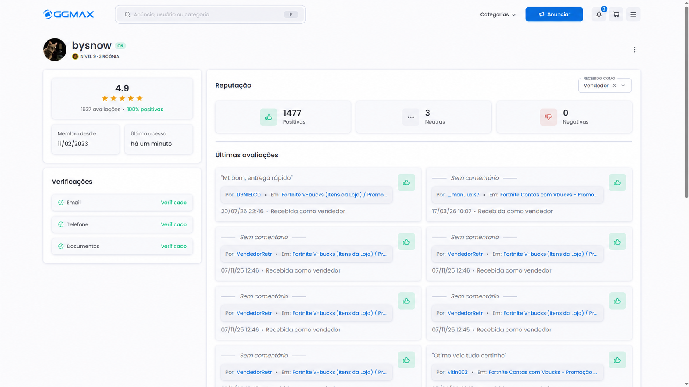

about
meu perfil público na ggmax. foi por lá que comecei a vender e ganhei meu primeiro dinheiro na internet.
digital marketplace profilepublic record / active

view profile ↗meu perfil público na ggmax. foi por lá que comecei a vender e ganhei meu primeiro dinheiro na internet.